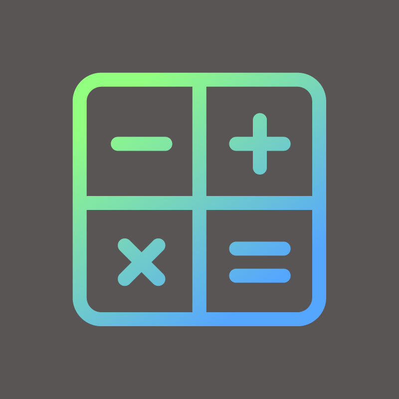
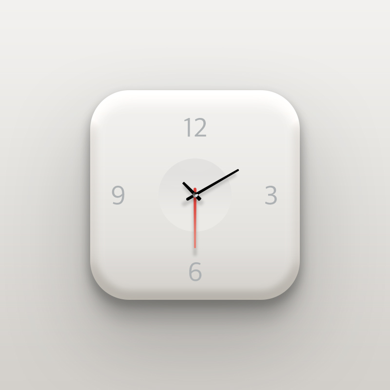
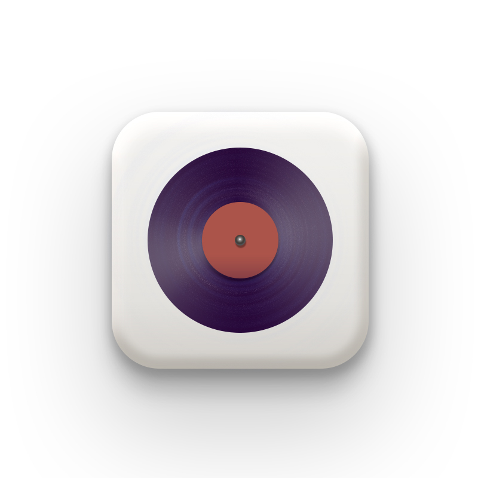
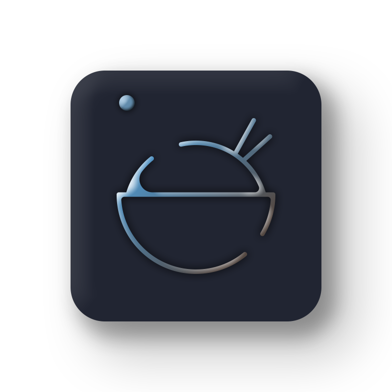

Illust디자이너들에게 새로운 작업환경을 제공해주기 위해 만들어진 프로그램으로 윈도우와 매킨토시에서 사용이 가능하다. 초보자를 고려한 만큼 배우고 사용하기가 쉽고 수월하여 책 표지, 시각 디자인, 광고 디자인, 제품 디자인등 다양한 부분에 사용된다. 예전부터 Illust프로그램으로 아이콘 만드는것을 좋아했었는데 학교에와서도 아이콘 만드는 수업이 있어서 너무 좋다. Flat한 느낌과 Marterial느낌등 다양한 느낌의 디자인을 Illust프로그램은 소화가 가능하다. Photoshop 프로그램과 마찬가지고 디자이너가 꿈이라면 이 프로그램 역시 끝까지 같이 가야 할 친구 같은 존재이다. |
    |